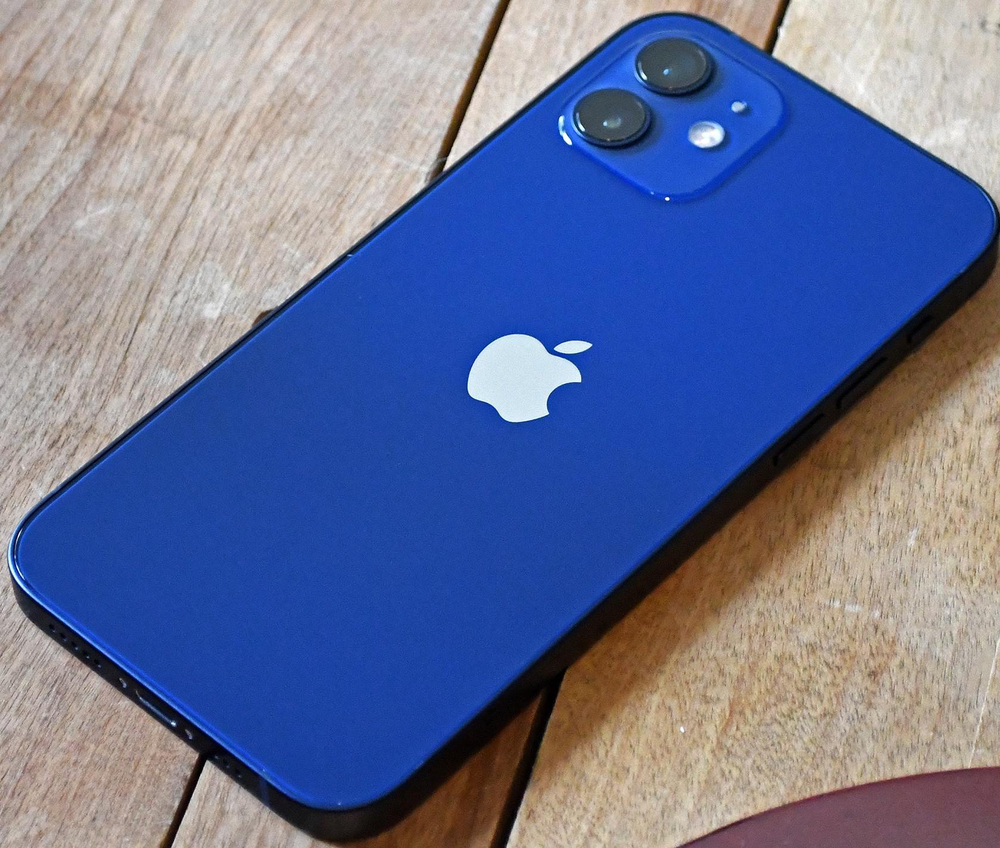
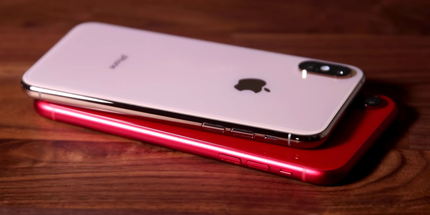

Iphone Store
Iphone12pro

5G goes Pro. A14 Bionic rockets past every other smartphone chip. The Pro camera system takes low-light photography to the next level — with an even bigger jump on iPhone 12 Pro Max. And Ceramic Shield delivers four times better drop performance. Let’s see what this thing can do.
Iphone12
The iPhone 12 display has rounded corners that follow a beautiful curved design, and these corners are within a standard rectangle. When measured as a standard rectangular shape, the screen is 6.06 inches diagonally (actual viewable area is less).
Iphone10
The iPhone X display has rounded corners that follow a beautiful curved design, and these corners are within a standard rectangle. When measured as a standard rectangular shape, the screen is 5.85 inches diagonally (actual viewable area is less).
Iphone8
iPhone 8 and iPhone 8 Plus embody Apple’s continuing environmental progress. They are designed with the following features to reduce environmental impact.